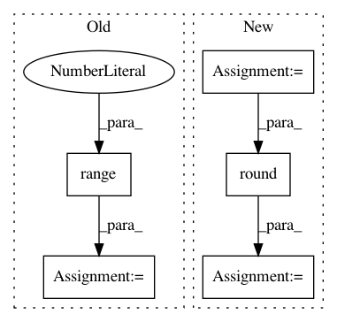

407a5112ab430db6f23fc4317a7400ada797d274,examples/bench.py,,,#,5
Before Change
import mord
import numpy as np
for n_samples in range(40, 200, 20):
X, y = datasets.make_classification(n_samples=n_samples, n_features=10000,
n_classes=5, n_informative=5)
clf1 = linear_model.LogisticRegressionCV(solver="lbfgs",
multi_class="multinomial")
clf2 = grid_search.GridSearchCV(mord.LogisticIT(), {"alpha": np.logspace(
-3, 3, 10)})
cv = cross_validation.StratifiedShuffleSplit(y, test_size=0.3)
print(cross_validation.cross_val_score(clf1, X, y, cv=cv).mean())
print(cross_validation.cross_val_score(clf2, X, y, cv=cv).mean())
print()
After Change
import mord
import numpy as np
boston = datasets.load_boston()
X, y = boston.data, np.round(boston.target).astype(np.int)
y -= y.min()
clf1 = linear_model.LogisticRegression(
solver="lbfgs", multi_class="multinomial")
In pattern: SUPERPATTERN
Frequency: 3
Non-data size: 5
Instances
Project Name: fabianp/mord
Commit Name: 407a5112ab430db6f23fc4317a7400ada797d274
Time: 2015-10-21
Author: f@bianp.net
File Name: examples/bench.py
Class Name:
Method Name:
Project Name: nipy/dipy
Commit Name: ee689fc16902074b07ab5342a66c66f732850965
Time: 2013-12-13
Author: mauro.zucchelli88@gmail.com
File Name: dipy/reconst/shore.py
Class Name:
Method Name: SHOREmatrix_odf
Project Name: DT42/BerryNet
Commit Name: 1a4afd3eb200e41706b67497bdc94261263147ee
Time: 2018-02-19
Author: bofu@dt42.io
File Name: berrynet/engine/movidius.py
Class Name:
Method Name: process_inceptionv3_output